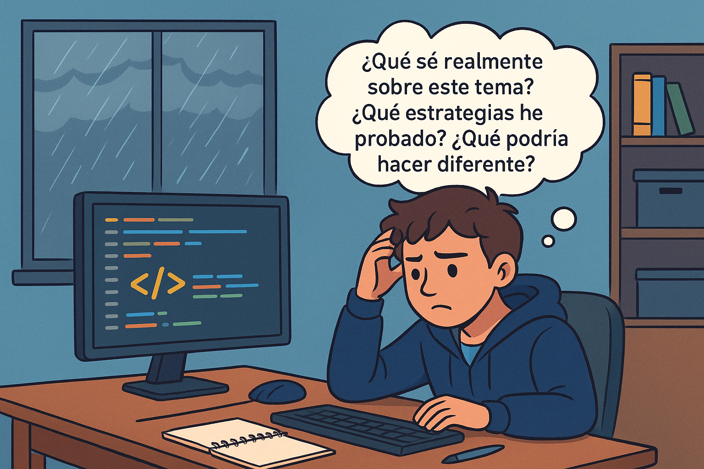
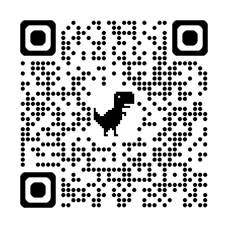

Introducción
Mateo controlando y guiando su proceso de aprendizaje.
Era una tarde lluviosa y Mateo, estudiante de décimo grado, estaba en su habitación intentando resolver un ejercicio complicado de programación web. Miraba la pantalla, pero nada parecía funcionar. Frustrado, pensó en rendirse. Sin embargo, recordó algo que su profesora había mencionado en clase: “Antes de rendirte, piensa en cómo estás pensando”.
Mateo se quedó un momento en silencio. Se preguntó:

¿Qué sé realmente sobre este tema? ¿Qué estrategias he probado? ¿Qué podría hacer diferente?Sin darse cuenta, estaba practicando Metacognición, es decir, reflexionando sobre su propio proceso de aprendizaje. Descubrió que entendía bien los conceptos básicos, pero que estaba aplicando una estrategia que no era la más adecuada para ese problema.
Decidió entonces organizar su plan: repasó la teoría, buscó ejemplos en internet, programó pequeños fragmentos de código y verificó paso a paso si funcionaban. Estaba usando autorregulación del aprendizaje, es decir, controlando y guiando de forma consciente lo que hacía para aprender mejor.
Al final, logró que el ejercicio funcionara. No solo resolvió el problema, sino que también entendió por qué su primer intento había fallado. Esa tarde comprendió algo importante: aprender no es solo acumular información, sino saber cómo aprender y tener el control del proceso.
Desde ese día, Mateo empezó a planificar mejor sus estudios, a evaluar sus avances y a ajustar sus métodos cuando era necesario. Descubrió que la metacognición le daba claridad sobre lo que sabía y lo que necesitaba mejorar, y que la autorregulación le permitía avanzar de forma ordenada y eficaz.
Objetivo de Aprendizaje
Al finalizar el estudio de este Objeto Virtual de Aprendizaje, estarás en capacidad de:
-
🎯
Comprender la importancia de la metacognición y la autorregulación en el proceso de aprendizaje autónomo, reconociendo estrategias para planificar, supervisar y evaluar el propio aprendizaje de manera eficaz.
Contenido
Explora la siguiente presentación interactiva y el material de apoyo del tema:
Actividades
Evaluación
Recursos para profundizar
Para ampliar tu conocimiento sobre ecuaciones y desigualdades, te recomendamos explorar los siguientes enlaces y documentos:
-
Metacognición y Autorregulación en el aula
Ir al recurso -
Descubre el poder de la metacognición
Ir al recurso -
Estrategias para el aprendizaje autorregulado
Ir al recurso